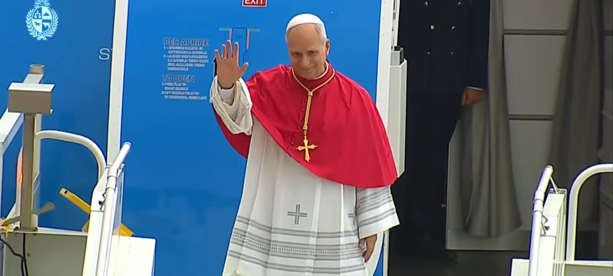
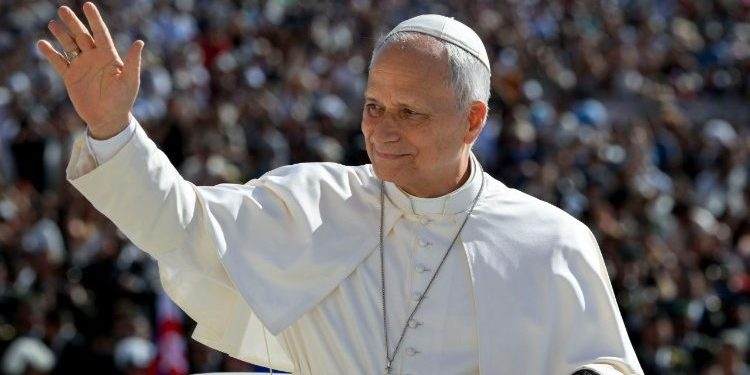
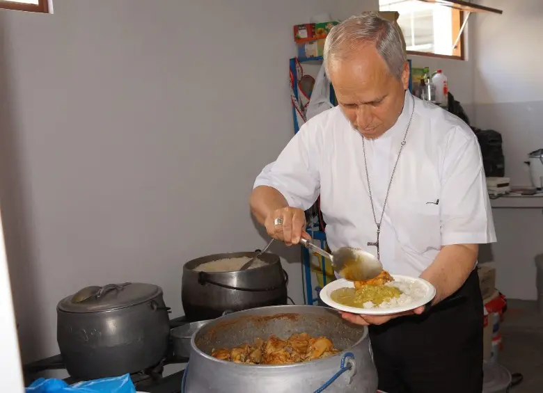

¡La llegada del Papa a Uruguay!
Ha aterrizado el viernes 6 de noviembre a las 16:30 en el Aeropuerto Internacional de Carrasco para iniciar una histórica visita de tres días por Montevideo, Paysandú y Florida.

¿POR QUÉ EL PAPA LEÓN XIV DECIDIÓ COMENZAR SU RECORRIDO POR URUGUAY?
IMPORTANCIA RELIGIOSA EN URUGUAY
El papa León XIV eligió Uruguay como uno de los primeros destinos de su recorrido por América Latina por diferentes motivos:

VIRGEN DE LOS TREINTA Y TRES
Uruguay tiene una fuerte tradición católica y una gran devoción a la Virgen de los Treinta y Tres, patrona del país.
PAPA FRANCISCO
El anterior Papa había expresado su intención de visitar Uruguay, pero no llegó a concretarlo.
COMUNIDAD CATÓLICA URUGUAYA
León XIV busca fortalecer los vínculos con la Iglesia uruguaya y acercarse a sus fieles.
PAPA LEÓN XIV Y SU MENSAJE DE PAZ
Su visita también pretende transmitir valores de paz, esperanza, solidaridad y fraternidad.
HISTORIA DEL PAPA LEÓN XIV
La historia del papa León XIV comienza mucho antes de convertirse en el líder de la Iglesia católica. Desde joven sintió interés por la religión y decidió dedicar su vida a ayudar a los demás.

En 1985 llegó a Perú como misionero, donde trabajó con personas de distintas comunidades, enseñó y ayudó a quienes más lo necesitaban. Con el paso de los años fue ocupando diferentes cargos dentro de la Iglesia hasta convertirse en obispo de Chiclayo.
En 2023, el papa Francisco lo nombró cardenal. Después del fallecimiento de Francisco, los cardenales se reunieron para elegir a un nuevo papa.
El 8 de mayo de 2025, Robert Francis Prevost fue elegido como el nuevo papa y adoptó el nombre de León XIV. Su elección fue histórica porque se convirtió en el primer papa nacido en Estados Unidos.
Desde entonces, comenzó su camino como líder de millones de católicos en todo el mundo, buscando transmitir mensajes de paz, solidaridad, respeto y unión entre las personas.